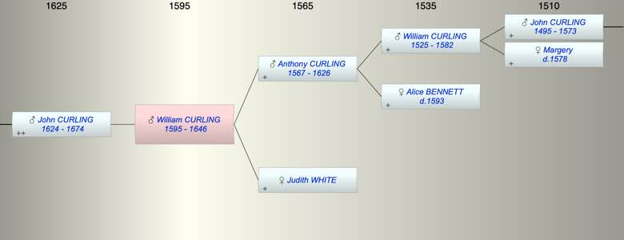

| [Index] |
| William CURLING (1595 - 1646) |
|  |
| b. 1595 at St Peter, Thanet |
| d. 1646 at St Laurence aged 51 |
| Parents: |
| Anthony CURLING (1567 - 1626) |
| Judith WHITE |
| Siblings (4): |
| John CURLING (1594 - 1649) |
| Joan CURLING (1597 - ) |
| Sybill CURLING (1599 - 1599) |
| Anthony CURLING (1601 - ) |
| Children (1): |
| John CURLING (1624 - 1674) |
| Grandchildren (5): |
| William CURLING (1646 - ), Mary CURLING (1653 - ), Daniel CURLING (1663 - 1686), Jane CURLING (1665 - ), John CURLING (1671 - 1721) |
| Events in William CURLING (1595 - 1646)'s life | |||||
| Date | Age | Event | Place | Notes | Src |
| 1595 | William CURLING was born | St Peter, Thanet | Note 1 | ||
| abt 1624 | 29 | Birth of son John CURLING | still to be found | ||
| 1626 | 31 | Death of father Anthony CURLING (aged 59) | St Laurence | buried 10 Sep 1626 ex FMP PR | |
| 1646 | 51 | William CURLING died | St Laurence | Note 2 | |
| Note 1: bap St Peter 1 Feb 1595/96 ex MW |
| Note 2: buried at St Laurence 21 Aug 1646 ex FMP PR |
| Personal Notes: |
|
PRC/16/248 S/11
Made 11 Aug 1646. William Curling of St Lawrence, Thanet, maltster, to be buried in the churchyard there. John Curling, yeoman, my brother living in the afsd Island and parish to be sole executor. To his eldest son John Curling £30 at age 21. To his son William Curling £30 at age 21. To his son Stephen Curling £30 at age 21.To his son Gregory Curling £30 at age 21 and to his son Thomas £30 at age 21. To his executors 20 shillings apiece. His movable and immovable for the bringing up of his sons. Dated 11 August 1646. Witnesses: William Hills, Martin Brooke. Proved 18 Dec 1646. NB LAC’s transcription clearly shows “my said executirs John Curling the Elder and John Curling my said brother” I agree having seen the original. So his sons John, William, Stephen, Gregory and Thomas were born after 1625 and probably in this order |
| Created on a Mac™ using iFamily for Mac™ on 8 Oct 2023 |